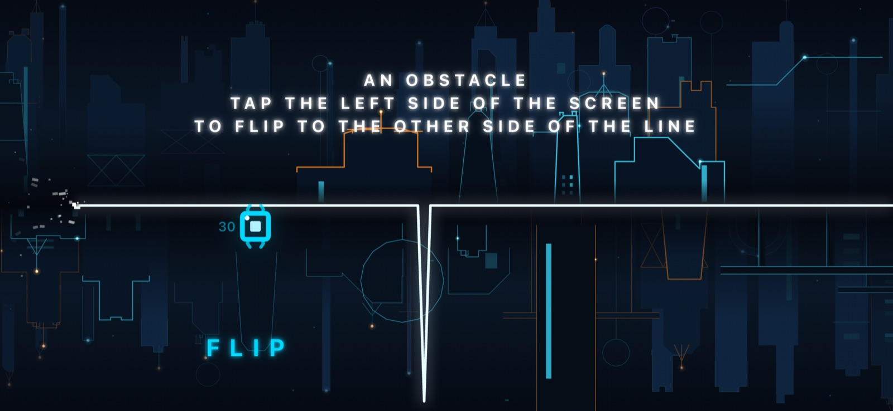

Pal & Pit
Dans un système où l'ordre règne, un portail menant vers le monde extérieur s'ouvre. Deux programmes luttent pour pouvoir s'échapper, mais un seul pourra en sortir.
Une course face à face pour deux joueurs sur un seul téléphone ou une tablette.
Collectez des signatures pour atteindre le portail, mais attention : plus vous serez proche de votre but, plus il sera dur à atteindre.
Captures d'écran





L'histoire
Au cœur du système dans lequel évoluent deux programmes, un portail permettant de s'en échapper s'ouvre. Il se refermera lorsque l'un d'entre eux l'aura franchi, alors une course s'engage. Cependant, le système n'est pas de cet avis et tentera tout ce qui est en son pouvoir pour mettre en quarantaine les deux programmes belliqueux. Heureusement, ces derniers peuvent compter sur leurs voisins, qui ont organisé une résistance et feront tout pour les aider à atteindre leur but.
COMMENT JOUER
LE BUT
Deux joueurs, un écran, une ligne. Ramasse les signatures : elles te font avancer. Le premier à la ligne d'arrivée, à l'avant de l'écran, gagne.
Heurte un obstacle et tu perds du terrain. Si tu en perds trop et que tu tombes de la ligne, ton programme est désintégré — tu as perdu.
COMMANDES
BASCULE
Passe de l'autre côté de la ligne. Le seul moyen de passer un grand pic, c'est de ne pas être là.
SAUT
Saute par-dessus ce qui arrive. Maintiens pour aller plus haut et plus loin.
FEU
Le rond, sur ton bord de l'écran. Il utilise le boost que tu portes, et attend ton signal.
BOOSTS
Ils flottent au-dessus de la ligne par paires, un de chaque côté, jamais les deux mêmes. Le premier arrivé le prend — et en prive l'autre. Tu ne peux en porter qu'un : un boost en poche, c'est un boost que tu ne ramasses pas.
MULTIPLICATEUR
Chaque objet compte double. L'avidité, récompensée.
AIMANT
Les objets viennent à toi. Même ceux du mauvais côté de la ligne.
BOUCLIER
Encaisse un coup à ta place. Après ça, tu te débrouilles.
ÉCLAIR
Frappe de l'autre côté de la table et fais reculer ton adversaire, où qu'il soit.
GEL
Ton adversaire appuie. Rien ne se passe.
INVERSION
Les deux commandes de ton adversaire s'inversent. Il le découvrira à ses dépens.
LIGNE PLATE
La ligne se tait. Plus rien sur le chemin de personne pendant un moment — y compris le sien.
Modes
COURSE
Deux joueurs sur un appareil, face à face. Le premier à la ligne d'arrivée s'échappe ; rattrapé par la ligne de mort, tu perds.
SOLO
La même course, seul. Atteins la ligne d'arrivée avant que la ligne de mort ne te rattrape.
Pourquoi je l'ai fait
Il y a quelques années, j'ai joué à Lub vs Dub, un jeu à deux sur un seul écran, et je l'ai adoré. Il n'existe plus, et il me manquait.
Alors j'ai fait le jeu auquel je voulais rejouer : rapide à lancer, facile à comprendre, tendu jusqu'à la dernière seconde — deux personnes autour d'un écran, qui se regardent.
Pas de pub, pas de pistage
Pal & Pit est gratuit. Pas de pub, pas d'achats intégrés, et aucune donnée collectée.
Si vous aimez ce que je fais et voulez m'aider à continuer, un café, ça aide beaucoup.
M'offrir un caféCrédits
- Conception et code
- Jeff · Two Pins Studio
- Inspiration du jeu
- Lub vs Dub
- Inspiration visuelle
- TRON: Legacy
- Réalisé avec
- Flutter & Flame